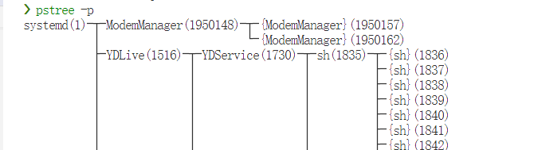
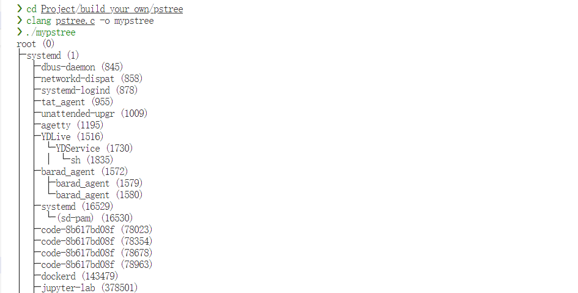

1. 前言
学了这么久的计算机, 却没有什么实际产出. 并且不是很愿意搞开发, 正好这学期上操作系统课, 于是就有了 build_your_own 系列的想法. 又恰好, 在早八的马原课由于二进制的随机排列组合, 我写下了 pstree. 于是这个系列我们从 pstree 开始.
2. pstree
pstree 是一个 Linux 下的命令行工具, 用于显示进程树. 完整的 pstree 功能还是很多的, 我这里选择了简单的 -p 参数版本实现.

figure-1 pstree_in_kernel
3. 实现
3.1. 结构体定义
首先我们要定义一个进程树的结构体, 用于存储进程的信息.
我采用的是链表的形式存储进程树, 一个进程的子进程通过 child 指针指向, 兄弟进程通过 next 指针指向.
1
2
3
4
5
6
7
typedef struct node {
__pid_t pid ;
char * name ;
__pid_t ppid ;
struct node * next ;
struct node * child ;
} node ;
然后整个进程树通过一个数组存储, 数组的下标为进程的 PID. 最大值为内核定义的最大 PID, 这个值定义在 /proc/sys/kernel/pid_max, 需要注意的是在不同的内核版本中可能不同. 例如在较早的内核版本中, 这个值为 32768.
1
2
3
// MAX PID defined in /proc/sys/kernel/pid_max
#define MAX 4194304
node * Tree [ MAX ] = { NULL };
3.2. 从内核获取进程信息
首先我们要介绍 /proc 目录.
/proc 目录是 Linux 系统中的一个特殊目录, 它提供了对运行中进程和系统内核的访问. 它是一个虚拟文件系统, 其中的文件和目录并不在磁盘上实际存在, 而是由内核在运行时动态生成的. /proc 目录下的文件和目录提供了对系统状态和进程信息的实时访问.
于是通过对 /proc 目录的访问, 遍历目录下的所有数字目录, 即可获取系统当前状态的所有进程.
func: make_tree 用于遍历 /proc 目录, 并获取所有进程的信息.
1
2
3
4
5
6
7
8
9
10
11
12
13
14
15
void make_tree ( node * Tree []) {
Tree [ 0 ] = ( node * ) malloc ( sizeof ( node ));
Tree [ 0 ] -> name = ( char * ) malloc ( sizeof ( char ) * 40 );
strcpy ( Tree [ 0 ] -> name , "root" );
DIR * dp = opendir ( "/proc" );
if ( ! dp ) {
fprintf ( stderr , "%s" , "Can 't open /proc/" );
exit ( 1 );
}
struct dirent * entry ;
while (( entry = readdir ( dp )) != NULL ) {
__pid_t pid = atoi ( entry -> d_name );
read_status ( pid , Tree );
}
}
插播和本次实现没啥关系的小 tips, /proc/self 是一个软链接, 指向当前进程的信息. 可以轻易的获取到当前进程的信息.
3.3. 从内核获取进程树
然后介绍 /proc/[pid]/stat 文件, 这一文件保存了进程的状态信息.
/proc/[pid]/stat 文件的内容如下:
1
2
3
4
5
6
7
8
9
10
11
12
13
14
15
16
17
18
19
20
21
22
23
24
25
26
27
28
29
30
31
32
33
34
35
36
37
38
39
40
41
42
43
44
45
46
47
48
49
50
51
52
pid：进程ID
comm：进程的命令名
state：进程的状态
ppid：父进程的进程ID
pgrp：进程组的进程ID
session：会话的进程ID
tty_nr：与进程关联的终端设备号
tpgid：进程所属的前台进程组ID
flags：进程的标志位
minflt：不需要从磁盘加载页面的次数（次缺页错误）
cminflt：在进程的子进程中不需要从磁盘加载页面的次数（次缺页错误）
majflt：需要从磁盘加载页面的次数（主缺页错误）
cmajflt：在进程的子进程中需要从磁盘加载页面的次数（主缺页错误）
utime：进程在用户态运行的时间（时钟滴答数）
stime：进程在内核态运行的时间（时钟滴答数）
cutime：进程的所有已死亡的子进程在用户态运行的时间（时钟滴答数）
cstime：进程的所有已死亡的子进程在内核态运行的时间（时钟滴答数）
priority：进程的调度优先级
nice：进程的静态优先级
num_threads：进程所拥有的线程数
itrealvalue：下一个计时器中的值
starttime：进程启动时的时钟滴答数
vsize：虚拟内存大小（字节）
rss：常驻内存集大小（页面数）
rsslim：进程的常驻内存集大小的限制（字节）
startcode：可执行代码的起始地址
endcode：可执行代码的结束地址
startstack：栈的起始地址
kstkesp：当前栈指针（ESP）
kstkeip：当前指令指针（EIP）
signal：挂起的信号位图
blocked：阻塞的信号位图
sigignore：忽略的信号位图
sigcatch：捕获的信号位图
wchan：进程正在等待的地址
nswap：交换出的页面数
cnswap：在进程的子进程中交换出的页面数
exit_signal：进程终止时发送给父进程的信号
processor：执行进程的处理器ID
rt_priority：实时优先级
policy：调度策略
delayacct_blkio_ticks：块IO延迟账户时钟滴答数
guest_time：虚拟CPU时间（以时钟滴答数为单位）
cguest_time：在进程的子进程中的虚拟CPU时间（以时钟滴答数为单位）
start_data：数据段的起始地址
end_data：数据段的结束地址
start_brk：堆的起始地址
arg_start：命令行参数的起始地址
arg_end：命令行参数的结束地址
env_start：环境变量的起始地址
env_end：环境变量的结束地址
exit_code：进程的退出状态
本次实现我们只需要获取进程的父进程 PID 和进程名. 通过读取 /proc/[pid]/stat 文件即可.
为了构建进程树, 我们需要递归的获取父进程的信息直到父进程为 0, 即 root 进程. 然后为了防止重复遍历, 我们检验了指针是否为空.
func: read_status 用于获取进程的信息, 并递归的获取父进程的信息.
1
2
3
4
5
6
7
8
9
10
11
12
13
14
15
16
17
18
19
20
21
22
23
24
25
26
27
28
29
30
31
32
33
34
35
36
37
void read_status ( __pid_t pid , node * Tree []) {
if ( Tree [ pid ] != NULL ) {
return ;
}
Tree [ pid ] = ( node * ) malloc ( sizeof ( node ));
Tree [ pid ] -> name = ( char * ) malloc ( sizeof ( char ) * 40 );
char * processpath = ( char * ) malloc ( sizeof ( char ) * 20 );
sprintf ( processpath , "/proc/%d/stat" , pid );
FILE * fp = fopen ( processpath , "r" );
if ( fp == NULL ) {
fprintf ( stderr , "Can 't open %s \n " , processpath );
free ( processpath );
exit ( 1 );
}
char i ;
__pid_t _pid , ppid ;
char pname [ 40 ];
fscanf ( fp , "%d (%s %c %d" , & _pid , pname , & i , & ppid );
pname [ strlen ( pname ) - 1 ] = '\0' ;
strcpy ( Tree [ pid ] -> name , pname );
assert ( pid == _pid );
Tree [ pid ] -> pid = pid ;
Tree [ pid ] -> ppid = ppid ;
fclose ( fp );
free ( processpath );
read_status ( ppid , Tree );
if ( Tree [ ppid ] -> child == NULL ) {
Tree [ ppid ] -> child = Tree [ pid ];
} else {
node * bro = Tree [ ppid ] -> child ;
while ( bro -> next != NULL ) {
bro = bro -> next ;
}
bro -> next = Tree [ pid ];
}
}
3.4. 打印进程树
打印进程树则比较简单, 进行一个记录深度的 DFS 即可. 为了美观, 我们使用了制表符 └─ 和 ├─ 进行分割. 并因此需要记录当前进程是否为父进程的最后一个子进程. 判断方法是 Tree[child->pid]->next == NULL.
func: print_tree 用于打印进程树.
1
2
3
4
5
6
7
8
9
10
11
12
13
14
15
16
17
18
19
void print_tree ( node * Tree [], int pid , int depth , int last_child ) {
for ( int i = 0 ; i < depth ; i ++ ) {
if ( i == depth - 1 ) {
if ( last_child ) {
printf ( "└─" );
} else {
printf ( "├─" );
}
} else {
printf ( "│ " );
}
}
printf ( "%s (%d) \n " , Tree [ pid ] -> name , pid );
node * child = Tree [ pid ] -> child ;
while ( child != NULL ) {
print_tree ( Tree , child -> pid , depth + 1 , Tree [ child -> pid ] -> next == NULL );
child = child -> next ;
}
}
3.5. 运行结果
不要忘记释放内存喵.

figure-2 mypstree
4. 总结
build_your_own 系列的第一篇就到这里了. 这次实现比较简单, 希望能坚持下去不要咕咕咕 (逃
 xxl
xxl